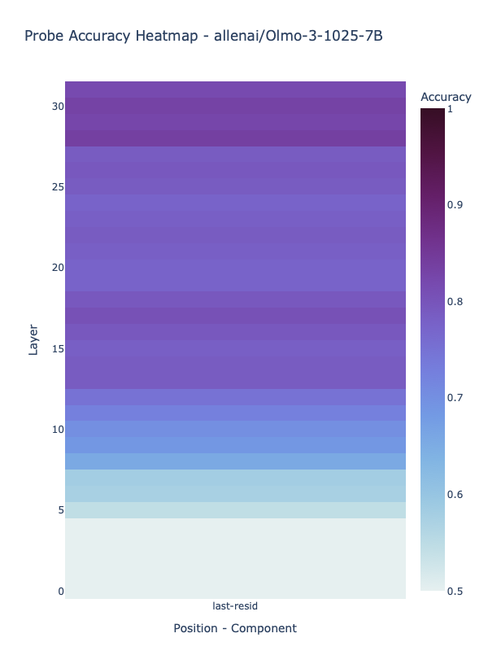
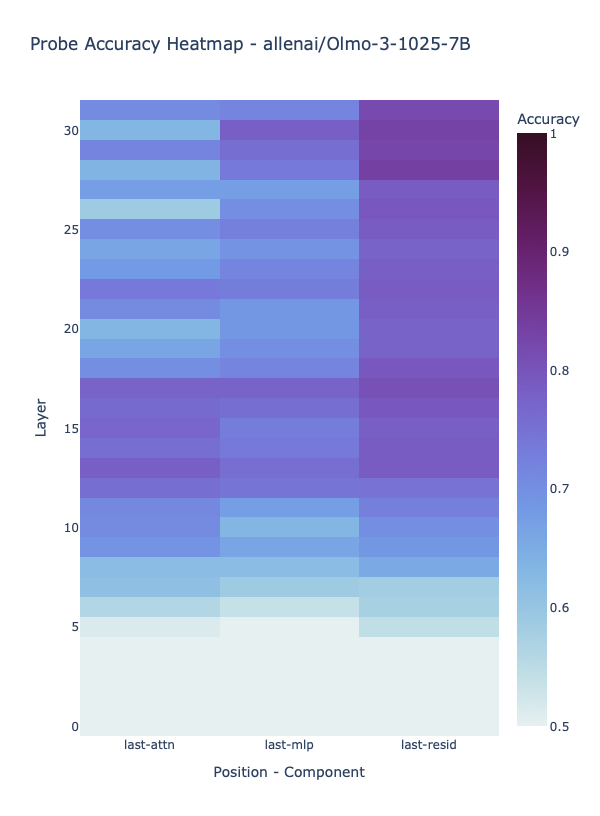
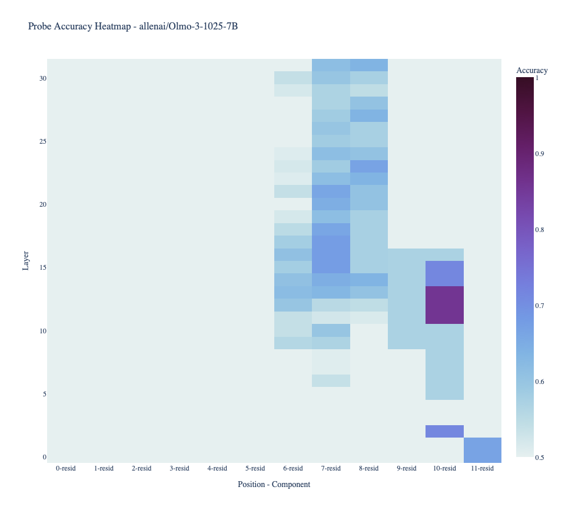
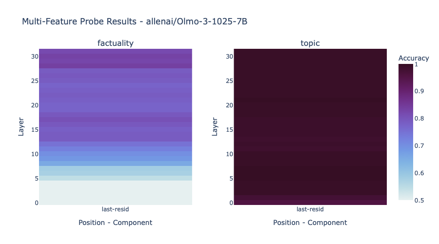
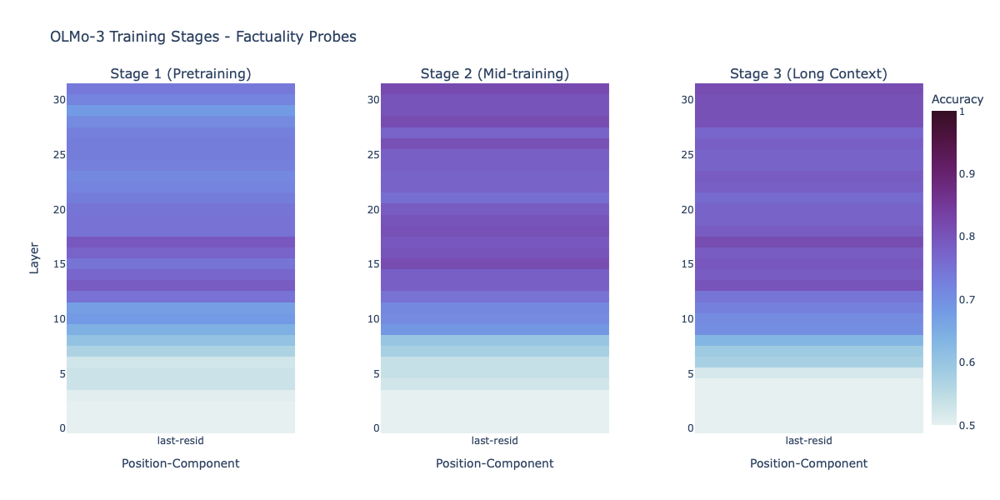

EasyProbe
linear probes / activations / NNSight / TransformerLens / steering
EasyProbe is a mechanistic interpretability library I built as a BlueDot Technical AI Safety project to remove the repetitive engineering around linear probe experiments. It takes prompts and binary labels, extracts activations, trains probes across model internals, and returns interactive heatmaps that show where a feature is linearly encoded.
Repository and API documentation
What It Provides
- One-liner probing across model layers with minimal setup.
- Multi-dimensional sweeps over layers, components, token positions, training stages, and models.
- Classification and generalization tests using trained probes.
- Model steering through learned probe directions, including experimental Dual Steering support.
- Performance tooling: batched activation extraction, activation and probe checkpoints, shared activation reuse, GPU memory cleanup, parallel training, and profiling reports.
Factuality Demo
To test the library end-to-end, I trained probes on 800 factually correct and incorrect statements using OLMo-3-1025-7B, then evaluated generalization on 100 unseen statements and experimented with steering from the learned factuality direction.
The demo is designed as a visual tour through the questions EasyProbe should make cheap to ask: where a feature appears, which component carries it, which token position concentrates it, whether related features emerge at different times, and how the encoding changes across training stages.





The best residual-stream probe from the layer sweep achieved 82.5% on the initial test split and 92% accuracy on a fresh 100-statement out-of-distribution set.
The full technical write-up includes heatmap screenshots for the layer, component, position, multi-feature, and training-stage sweeps.
Implementation Details
Probe training uses scikit-learn logistic regression with L2 penalty, an LBFGS solver, an 80/20 stratified train/test split, and selectivity reporting against a random baseline. Activations are normalized with z-score normalization per layer/component pair, and the library supports both TransformerLens and NNSight backends.
The activation extraction path is checkpointed by batch, tracks progress in a resumable metadata file, and can clean up intermediate activations after successful completion. Shared-prompt multi-feature runs reuse the same forward-pass activations across probes, which keeps multi-label experiments much cheaper.
Probe Usage
After training, probe weights can be reused as lightweight classifiers or as steering vectors. EasyProbe can classify new text by extracting the relevant activations and applying the best trained probe, or inject the learned direction into the residual stream to steer generation.
I also added support for Dual Steering, which treats probe weights and activations as living in different geometric spaces and filters the steering update to reduce off-topic semantic drift.